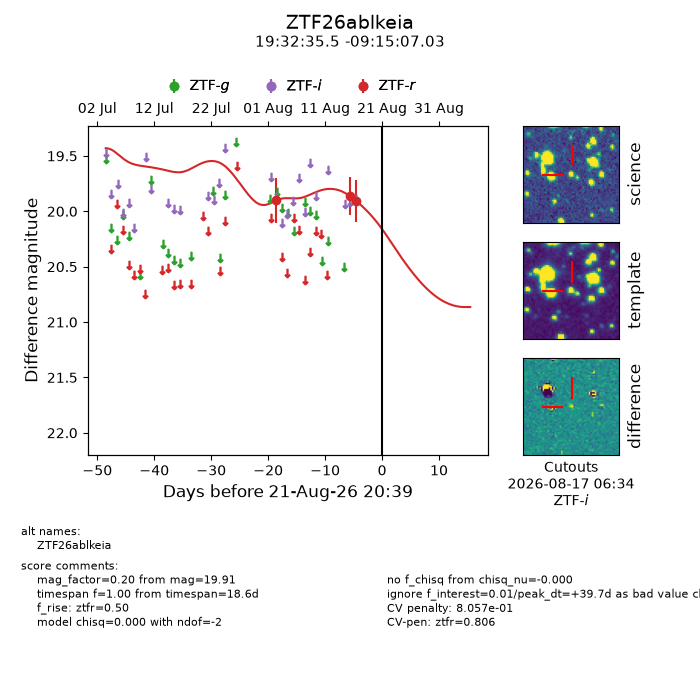
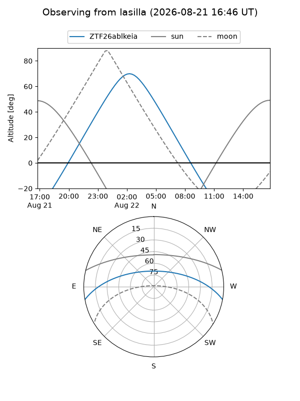
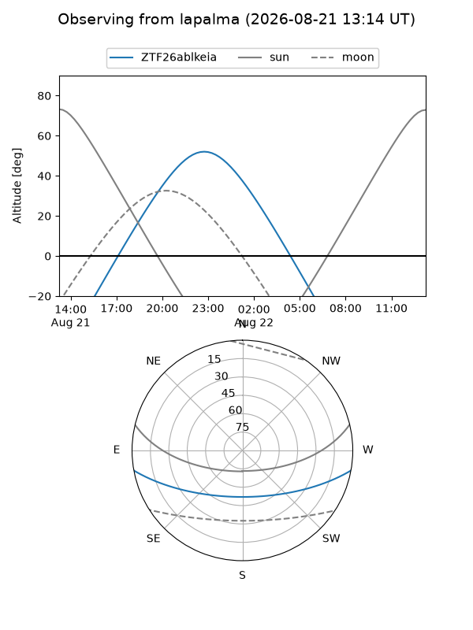
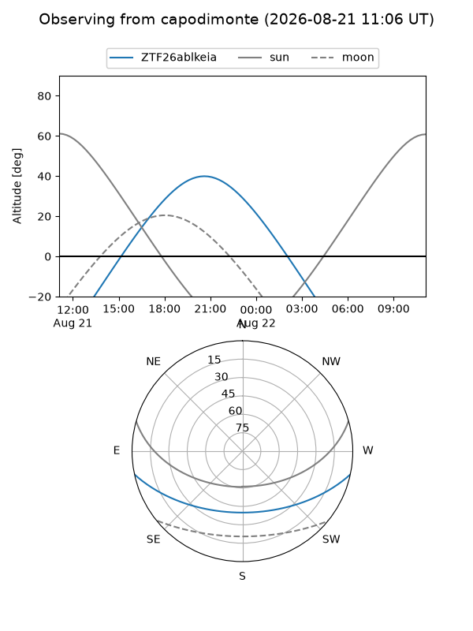
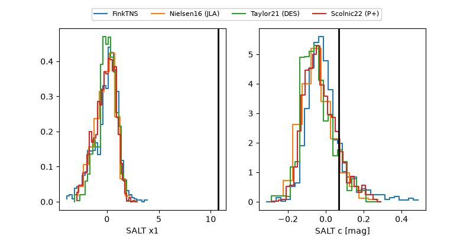

ZTF26ablkeia
Target ZTF26ablkeia at 2026-08-22 08:18
Aliases and brokers:
FINK-ZTF: ztf.fink-portal.org/ZTF26ablkeia
Lasair-ZTF: lasair-ztf.lsst.ac.uk/objects/ZTF26ablkeia
ALeRCE-ZTF: alerce.online/object/ZTF26ablkeia
Direct TNS query: direct search
alt names
ZTF26ablkeia (ztf,fink_ztf)
Coordinates:
equatorial (ra, dec) = 293.1479,-9.25195
equatorial (HMS+DMS) = 19:32:35.49,-09:15:07.03
galactic (l, b) = (29.2373,-13.30873)
Flags:
peak dt: +40.2
likely cv: !!
Photometry:
last ztfr=19.91
3 ztfr detections
Lightcurve

Visibility



Additional plots
